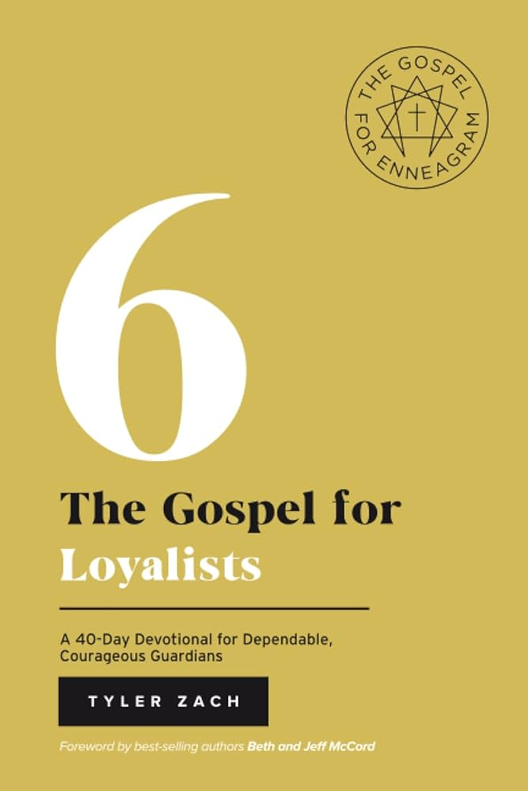

The Gospel For Loyalists
The Gospel for Loyalists: A 40-Day Devotional for Dependable, Courageous Guardians by Tyler Zach is designed for Enneagram Type 6s to overcome fear, manage anxiety, and find security in God rather than over-preparation. It encourages moving from a survival mindset to a courageous, faith-driven life, offering prayers and reflections to foster trust and confidence.